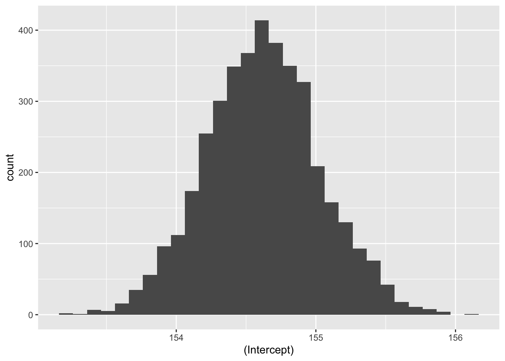

Code
library(tidyverse) # Datenjudo
library(rstanarm) # Bayes-Modelle berechnen
library(easystats) # Statistik-Komfort
library(DataExplorer) # Daten verbildlichen
library(ggpubr) # Daten verbildlichen
library(hexbin) # stat_bin_hex ggplot2
Abbildung 1.1 gibt einen Überblick zum aktuellen Standort im Modulverlauf.
Nach Absolvieren des jeweiligen Kapitels sollen folgende Lernziele erreicht sein.
Sie können …
Der Stoff dieses Kapitels orientiert sich an McElreath (2020), Kap. 4.1 bis 4.3.
Für rstanarm wird ggf. weitere Software benötigt.
Software, und das sind R-Pakete, müssen Sie nur einmalig installieren. Aber bei jedem Start von R bzw. RStudio müssen Sie die (benötigten!) Pakete starten.
library(tidyverse) # Datenjudo
library(rstanarm) # Bayes-Modelle berechnen
library(easystats) # Statistik-Komfort
library(DataExplorer) # Daten verbildlichen
library(ggpubr) # Daten verbildlichen
library(hexbin) # stat_bin_hex ggplot2Ab diesem Kapitel benötigen Sie das R-Paket rstanarm. \(\square\)
Wir benötigen den Datensatz !Kung. Quelle der Daten ist McElreath (2020) mit Bezug auf Howell.
Kung_path <-
"https://raw.githubusercontent.com/sebastiansauer/Lehre/main/data/Howell1a.csv"
d <- read.csv(Kung_path)
head(d)Beispiel 7.1 (Was war noch mal eine Normalverteilung?) In diesem Kapitel benötigen Sie ein gutes Verständnis der Normalverteilung (die auch als Gauss-Verteilung bezeichnet wird). Fassen Sie daher die wesentlichen Aspekte der Normalverteilung (soweit im Unterricht behandelt) zusammen! \(\square\)
Beispiel 7.2 (Was war noch mal eine Posterior-Verteilung?) In diesem Kapitel befragen wir die Post-Verteilung für ein normalverteilte Zufallsvariable, nämlich die Körpergröße der !Kung San. Was war noch mal eine Post-Verteilung und wozu ist sie gut? \(\square\)
Dieser Abschnitt basiert slee auf McElreath (2020), Kap. 4.3.
In diesem Abschnitt untersuchen wir eine Forschungsfrage in Zusammenhang mit dem Volk der !Kung, s. Abbildung 7.1.
The ǃKung are one of the San peoples who live mostly on the western edge of the Kalahari desert, Ovamboland (northern Namibia and southern Angola), and Botswana.The names ǃKung (ǃXun) and Ju are variant words for ‘people’, preferred by different ǃKung groups. This band level society used traditional methods of hunting and gathering for subsistence up until the 1970s. Today, the great majority of ǃKung people live in the villages of Bantu pastoralists and European ranchers.


Quelle: By Andrewwik.0 - Own work, CC BY-SA 4.0,
Wir interessieren uns für die Größe der erwachsenen !Kung, also filtern wir die Daten entsprechend und speichern die neue Tabelle als d2.
d2 <- d %>%
filter(age >= 18)
nrow(d2)
## [1] 352\(N=352\).
Lassen wir uns einige typische deskriptive Statistiken zum Datensatz ausgeben. {easystats} macht das tatsächlich recht easy, s. Tabelle 7.1.
describe_distribution(d2)| Variable | Mean | SD | IQR | Min | Max | Skewness | Kurtosis | n | n_Missing |
|---|---|---|---|---|---|---|---|---|---|
| height | 154.60 | 7.74 | 12.06 | 136.53 | 179.07 | 0.15 | −0.48 | 352.00 | 0 |
| weight | 44.99 | 6.46 | 9.19 | 31.07 | 62.99 | 0.13 | −0.51 | 352.00 | 0 |
| age | 41.14 | 15.97 | 23.00 | 18.00 | 88.00 | 0.67 | −0.21 | 352.00 | 0 |
| male | 0.47 | 0.50 | 1.00 | 0.00 | 1.00 | 0.13 | −2.00 | 352.00 | 0 |
Die Verteilungen lassen sich mit plot_density (aus {DataExplorer}), s. Abbildung 7.2.
plot_density(d2)Forschungsfrage: Wie groß sind die erwachsenen !Kung im Durchschnitt?
Wir interessieren uns also für den Mittelwert der Körpergröße (erwachsener Kung beider Geschlechter), \(\mu\).
Wir sind uns über diesen Mittelwert nicht sicher2, und unsere Ungewissheit quantifizieren wir anhand einer Normalverteilung mit Mittelwert von 178cm und Streuung von 20 cm:
\[\mu \sim \mathcal{N}(178, 20) \tag{7.1}\]
Gleichung 7.1 definiert ein Modell: Unsere Vorstellung der mittleren (“typischen”) Körpergröße der erwachsenen !Kung.
Warum 178 cm? Kein besonderer Grund. Hier wollen wir den Effekt verschiedener Priori-Werte untersuchen.3 In einer echten Untersuchung sollte man immer einen inhaltlichen Grund für einen Priori-Wert haben. Oder man wählt “schwach informative” Prioris, wie das {rstanarm} tut: Damit lässt man kaum Vorab-Information in das Modell einfließen, aber man verhindert extreme Prioris, die meistens unsinnig sind (so wie eine SD von 100 Metern in diesem Fall).
Wir haben zwar vorab nicht viel Wissen, aber auch nicht gar keines: Eine Gleichverteilung der Körpergrößen kommt nicht in Frage und ein vages Wissen zum Mittelwert haben wir auch. Darüber hinaus ist eine Normalverteilung nicht unplausibel.
Darf ich vorstellen …
Bevor wir unser Kung-Modell spezifizieren können, sollten wir noch überlegen, welches Vorab-Wissen wir zur Streuung um den Mittelwert herum haben. Da wir uns nicht 100% sicher zur gesuchten Größe sind, müssen wir angeben, wie groß die Streuung um den Mittelwert sein soll. Hier werden wir eingestehen, dass wir uns auch nicht 100% sicher sind, wie groß die Streuung exakt ist. Also geben wir eine Verteilung für die Streuung an.
Etwas Wissen über diese Verteilung haben wir:
Diese Anforderungen4 spiegeln sich in Abbildung 7.3 wider; es handelt sich um eine Exponentialverteilung. Außerdem zeigt die Abbildung verschiedene Quantile, wie das 95%-Quantil, das bei 3 liegt; 95% der Werte dieser Verteilung sind also nicht größer als 3.

Für eine exponentialverteilte Variable \(X\) schreibt man auch:
\[X \sim \operatorname{Exp}(1)\]
Eine Verteilung dieser Form nennt man Exponentialverteilung.
Ohne auf die mathematischen Eigenschaften im Detail einzugehen, halten wir fest, dass der Graph dieser Funktion gut zu unseren Plänen passt.
Schauen wir uns einige Beispiele von Exponentialverteilungen an. Unterschiede in Exponentialverteilungen sind rein auf Unterschiede in \(\lambda\) (lambda) zurückzuführen, s. Abbildung 7.4.

Wie wir in Abbildung 7.4 sehen, könnte eine Exponentialverteilung mit \(\lambda=1/8\) grob passen.
Die “richtigen” Priori-Verteilung zu finden, bzw. die richtigen Parameter für die Priori-Verteilung zu wählen, ist nicht möglichn, denn es gibt nicht die eine, richtige Priori-Verteilung. Eine “gut passende” Verteilung zu finden, ist häufig nicht leicht. Gut beraten ist man mit der Regel, im Zweifel lieber eine liberale Verteilung zu wählen, die einen breiteren Raum an möglichen Werten zulässt. Allerdings sollte man nicht das Baby mit dem Wasser auskippen und extreme Werte, wie mehrere Meter Körpergröße Streuung, erlauben.
Man kann sich die Quantile der Exponentialverteilung mit qexp ausgeben lassen, wobei mit man p den Wert der Verteilungsfunktion angibt, für den man das Quantil haben möchte. Mit rate wird \(\lambda\) (lambda) bezeichnet.
Dieser Aufruf zum Beispiel, qexp(p = .5, rate = 1/8), gibt uns die Verteilungsfunktion einer Exponentialverteilung mit Rate (\(\lambda\)) von 1/8 zurück, ca. 5.5.
Die Grenzen der inneren 95% dieser Verteilung kann man sich auch ausgeben.
qexp(p = c(0.025, .975), rate = 1/8)
## [1] 0.2025425 29.5110356Diese Grenzen scheinen hinreichend weit, das wir noch von den Daten überrascht werden können, aber schmal genug, um unsinnige Werte auszuschließen. Ein guter Start! Weiter geht’s!
📺 Teil 1
Wir nehmen an, dass \(\mu\) und \(h_i\) normalverteilt sind und \(\sigma\) exponentialverteilt (da notwendig positiv) ist:
Likelihood: \(h_i \sim \mathcal{N}(\mu, \sigma)\)
Prior für den Parameter \(\mu\): \(\mu \sim \mathcal{N}(178, 20)\)
Prior für den Parameter \(\sigma\): \(\sigma \sim \mathcal{E}(0, 0.1)\)
Daher: \(95\%KI( \mu): 178 \pm 40\)
In Abbildung 7.5 sind unsere Priori-Verteilungen visualisiert.

Dieses Modell hat zwei Parameter, \(\mu\) und \(\sigma\). \(\square\)
Zu Erinnerung: Die Posteriori-Wahrscheinlichkeit ist das Ergebnis von Priori-Wahrscheinlichkeit und Likelihood.
Die Körpergrößen der einzelnen Personen \(h_i\) nehmen wir als normalverteilt an mit Mittelwert \(\mu\) und Streuung \(\sigma\):
\[h_i \sim \mathcal{N}(\color{blue}{\mu},\color{green}{\sigma}) \qquad{\text{Likelihood}}\]
Der Mittelwert der Körpergröße sei normalverteilt mit \(\mu=178\) und \(\sigma=20\):
\[\color{blue}{\mu \sim \mathcal{N}(178, 20)} \hfill{\text{Prior}}\]
Die Streuung \(\sigma\) der Größen sei exponentialverteil mit \(\lambda = 1/8\).
\[\color{green}{\sigma \sim \mathcal{E}(1/8)} \hfill{\text{Prior}}\]
m41: fertig!Jetzt haben wir unser Modell (m41) definiert!
Weil es so schön ist, schreiben/zeichnen wir es hier noch einmal auf, Gleichung 7.2, Abbildung 7.6.
\[ \begin{aligned} h_i &\sim \mathcal{N}(\mu, \sigma) & \text{Likelihood} \\ \mu &\sim \mathcal{N}(178, 20) & \text{Prior} \\ \sigma &\sim \mathcal{E}(1/8) & \text{Prior} \end{aligned} \tag{7.2}\]

m41
Zur Berechnung von m41 nutzen wir jetzt dieses Mal aber nicht die Gittermethode (Bayes-Box), sondern lassen R die Arbeit verrichten.
Da gibt es einen neuen Golem, ziemlich kräftig der Bursche, der soll die Arbeit für uns tun. Der Golem hört auf den Namen rstanarm5.
m41Okay, Golem, an die Arbeit! Berechne uns das Kung-Modell! Nennen wir das Modell m416.
m41 <- stan_glm(height ~ 1, data = d2, refresh = 0)
m41_post <- as_tibble(m41)
names(m41_post) <- c("mu", "sigma")Das Argument refresh = 0 verhindert, dass die Details zum Ziehen der Stichproben am Bildschirm ausgegeben werden. Ich finde diese Ausgabe meist nicht informativ, so dass ich sie lieber unterdrücke. stan_glm7 ist eine Funktion, mit der man Regressionsmodelle berechnen kann. Nun haben wir in diesem Fall kein “richtiges” Regressionsmodell. Man könnte sagen, wir haben eine AV (Körpergröße), aber keine UV (keine Prädiktoren). Glücklicherweise können wir auch solche “armen” Regressionsmodelle formulieren: av ~ 1 bzw. in unserem Beispiel height ~ 1 bedeutet, dass man nur die Verteilung der AV berechnen möchte, aber keine Prädiktoren hat (das soll die 1 symbolisieren). Für das Modell m41 haben wir keine Prioris spezifiziert. Wir greifen damit auf die Voreinstellung (defaults) der Prioris von rstanarm zurück. Das ist ok, aber wenn Sie Vorab-Wissen haben, sollten Sie das an rstanarm weitergeben, weil es ja schade wäre, wenn Sie Wissen haben, das von Ihrem Modell nicht genutzt wird.
Plotten wir mal die gemeinsame Posteriori-Verteilung von m41, s. Abbildung 7.7
Gemeinsame Post-Verteilung von Mittelwert und Streuung
m41_post %>%
ggplot() +
aes(x = mu, y = sigma) %>%
geom_hex() +
scale_fill_viridis_c() Da das Modell zwei Parameter hat, können wir auch beide gleichzeitig plotten. Wie man sieht, sind die beiden Parameter unkorreliert. In anderen Modellen können die Parameter korreliert sein.
Abbildung 7.7 erlaubt uns, für jede Kombination von Mittelwert und Streuung zu fragen, wie wahrscheinlich diese bestimmte Kombination ist.
Hier sind noch zwei andere Visualisierungen der Post-Verteilung von m42, s. Abbildung 7.8.

Und hier kommt die Post-Verteilung nur des Mittelwerts.
Natürlich können wir auch nur von einem einzelnen Parameter (z.B. Mittelwert) die Verteilung untersuchen, s. Abbildung 7.9.

Fassen wir die Ergebnisse dieses Modells zusammen:
Wir bekommen eine Wahrscheinlichkeitsverteilung für \(\mu\) und eine für \(\sigma\) (bzw. eine zweidimensionale Verteilung, für die \(\mu,\sigma\)-Paare).
Trotz des eher vagen Priors ist die Streuung Posteriori-Werte für \(\mu\) und \(\sigma\) klein: Die große Stichprobe hat die Priori-Werte überstimmt.
Ziehen wir Stichproben aus der Posteriori-Verteilung, so können wir interessante Fragen stellen.
… wir hätten da mal ein paar Fragen an Sie. 🕵
Antworten folgen etwas weiter unten.
Abschließend, eigentlich nur Spielerei, noch eine andere Visualisierung der Post-Verteilung von \(\mu\) und von \(\sigma\), Abbildung 7.10.
stan_glm() berechnenMit stan_glm() können wir komfortabel die Posteriori-Verteilung berechnen. Die Gittermethode wird nicht verwendet, aber die Ergebnisse sind - in bestimmten Situationen - ähnlich. Es werden aber auch viele Stichproben simuliert (sog. MCMC-Methode). Gibt man keine Priori-Werte an, so greift die Funktion auf Standardwerte zurück.
Grob gesagt berechnen wir die Post-Verteilung mit stan_glm so:
library(rstanarm) # Paket muss gestartet sein.
# berechnet Post.-Vert.:
stan_glm(
# modelldefinition:
AV ~ UV,
# Datensatz:
data = meine_daten
)Modelldefinition:
\(h_i \sim \mathcal{N}(\mu, \sigma)\), Likelihood
\(\mu \sim \mathcal{N}(155, 19)\), Prior zum Größenmittelwert (von Stan übernommen)
\(\sigma \sim \mathcal{E}(0.125)\), Prior zur Streuung der Größen (von Stan übernommen)
stan_glm()Wir können, wie wir es oben getan haben, uns die Stichproben der Post-Verteilung ausgeben lassen, und diese z.B. plotten.
Wir können es aber auch komfortabler haben … Mit dem Befehl parameters kann man sich die geschätzten Parameterwerte einfach ausgeben lassen.
m41 <- stan_glm(height ~ 1, data = d2, refresh = 0) # aus Paket rstanarm
parameters(m41) # aus Paket `easystats`| Parameter | Median | 95% CI | pd | Rhat | ESS | Prior |
|---|---|---|---|---|---|---|
| (Intercept) | 154.61 | (153.82, 155.45) | 100% | 1.000 | 2862.00 | Normal (154.60 +- 19.36) |
Das Wesentliche: Unser Golem schätzt den Größenmittelwert der Kung auf ca. 155cm bzw. auf einen Bereich von etwa 153.8213541 bis 155.4527452 schätzt. Informativ ist vielleicht noch, dass wir den Prior erfahren, der im Modell verwendet wurde. Dazu später mehr.
stan_glm()?Hier ein paar Kerninfos zu stan_glm:
rstanarm stellt Stan für uns bereit.stan_glm() ist für die Berechnung von Regressionsmodellen ausgelegt.heights) schätzen, so hat man man … eine Regression ohne Prädiktor.y ~ 1. Die 1 steht also für die nicht vorhandene UV; y meint die AV (height).(Intercept) (Achsenabschnitt) gibt den Mittelwert an.Mehr findet sich in der Dokumentation von RstanArm.
Die Parameter eines Modells sind die Größen, für die wir eine Priori-Verteilung annehmen. Außerdem wählen wir einen einen Likelihood-Funktion, so dass wir die Likelihood berechnen können. Auf dieser Basis schätzen wir dann die Post-Verteilung. Ich sage schätzen, um hervorzuheben, dass wir die wahren Werte nicht kennen, sondern nur eine Vermutung haben, unsere Ungewissheit vorab also (wie immer) in der Priori-Verteilung festnageln und unsere Ungewissheit nach Kenntnis der Daten in der Posteriori-Verteilung quantifizieren. Wie gerade gesehen, lassen sich die Modellparameter (bzw. genauer gesagt deren Schätzungen) einfach mit parameters(modellname) auslesen.
Wie wir es vom Globusversuch gewohnt sind, können wir aber auch Stichproben aus der Post-Verteilung ziehen.
Hier die ersten paar Zeilen von post_m41:
post_m41 <- as_tibble(m41)
head(post_m41)In einer Regression ohne Prädiktoren entspricht der Achsenabschnitt dem Mittelwert der AV, daher gibt uns die Spalte (Intercept) Aufschluss über unsere Schätzwerte zu \(\mu\) (der Körpergröße).
Übungsaufgabe 7.1 (Mit welcher Wahrscheinlichkeit ist \(\mu>155\)?)
Übungsaufgabe 7.2 (Mit welcher Wahrscheinlichkeit ist \(\mu>165\)?)
Beispiel 7.3 (Welche mittlere Körpergröße wird mit 95% Wahrscheinlichkeit nicht überschritten, laut dem Modell m41?)
Übungsaufgabe 7.3 (In welchem 90%-PI liegt \(\mu\) vermutlich?)
Übungsaufgabe 7.4 (Mit welcher Unsicherheit ist die Schätzung der mittleren Körpergröße behaftet?)
m41 %>%
parameters()| Parameter | Median | 95% CI | pd | Rhat | ESS | Prior |
|---|---|---|---|---|---|---|
| (Intercept) | 154.61 | (153.82, 155.45) | 100% | 1.000 | 2862.00 | Normal (154.60 +- 19.36) |
Seeing is believing, s. Abbildung 7.11.
m41 %>%
parameters() %>%
plot(show_intercept = TRUE)
Das Modell ist sich recht sicher: die Ungewissheit der mittleren Körpergröße liegt bei nicht viel mehr als einem Zentimeter (95%-CI).
Übungsaufgabe 7.5 (Was ist der mediane Schätzwert der mittleren Körpergröße, sozusagen der “Best Guess”?)
🏋️ Ähnliche Fragen bleiben als Übung für die Lesis. 🤓
stan_glm()stan_glm() nimmt für uns Priori-Wert an. Welche das sind, kann man sich so anzeigen lassen:
prior_summary(m41)
## Priors for model 'm41'
## ------
## Intercept (after predictors centered)
## Specified prior:
## ~ normal(location = 155, scale = 2.5)
## Adjusted prior:
## ~ normal(location = 155, scale = 19)
##
## Auxiliary (sigma)
## Specified prior:
## ~ exponential(rate = 1)
## Adjusted prior:
## ~ exponential(rate = 0.13)
## ------
## See help('prior_summary.stanreg') for more detailsstan_glm() verwendet (in der Voreinstellung) schwach informative Priori-Werte, die nur wenig Vorabwissen in das Modell geben. Es werden dafür die Stichproben-Daten als Priori-Daten verwendet: Mittelwerte und Streuungen der AV werden als Grundlage für die Priori-Verteilungen herangezogen. Strenggenommen ist das nicht “pures Bayes”, weil die Priori-Werte ja vorab, also vor Kenntnis der Daten bestimmt werden sollen. Bitte reichen Sie Ihre Beschwerden bei Andrew Gelman ein.
Man sollte diese Standardwerte als Minimalvorschlag sehen. Kennt man sich im Sachgebiet aus, kann man meist bessere Prioris finden. Die Voreinstellung ist nicht zwingend; andere Werte wären auch denkbar.
stan_glm
Intercept: \(\mu\), der Mittelwert der Verteilung \(Y\)
Auxiliary (sigma): \(\sigma\), die Streuung der Verteilung \(Y\)
Eine sinnvolle Strategie ist, einen Prior so zu wählen, dass man nicht übergewiss ist, also nicht zu sicher Dinge behauptet, die dann vielleicht doch passieren (also die Ungewissheit zu gering spezifiziert), andererseits sollte man extreme, unplausible Werte ausschließen.
Bei der Wahl der Prioris gibt es nicht die eine, richtige Wahl. Die beste Entscheidung ist auf transparente Art den Stand der Forschung einfließen zu lassen und eigene Entscheidungen zu begründen. Häufig sind mehrere Entscheidungen möglich. Möchte man lieber vorsichtig sein, weil man wenig über den Gegenstand weiß, dann könnte man z.B. auf die Voreinstellung von rstanarm vertrauen, die “schwachinformativ” ist, also nur wenig Priori-Information in das Modell einfließen lässt.
stan_glm() ist deutlich langsamer als z.B. der befreundete Golem lm(). Der Grund für Stans Langsamkeit ist, dass er viele Stichproben zieht, also viel zu zählen hat. Außerdem wiederholt er das Stichprobenziehen (im Standard) 4 Mal, damit sein Meister prüfen kann, ob er (Stan) die Arbeit auch immer richtig gemacht hat. Die Idee dabei ist, wenn alle vier Durchführungen (auch “Ketten” engl., chains) genannt, zum etwa gleichen Ergebnis kommen, dann wird schon alles mit rechten Dingen zugegangen sein. Weichen die Ergebnisse der 4 Ketten voneinander ab, so ist Stan ein Fehler unterlaufen, oder, irgendetwas ist “dumm gelaufen”. An dieser Stelle schauen wir uns die Ketten nicht näher an, aber es sei notiert, dass man die Anzahl der Ketten mit dem Argument chains steuern kann. Möchte man, dass Stan sich beeilt, so kann man chains = 1 setzen, das spart Zeit.
m41a <- stan_glm(height ~ 1,
data = d2,
chains = 1, # nur 1 Kette, anstelle von 4 im Default, spart Zeit
refresh = 0)
parameters(m41a) m42: unsere Priori-Werte📺 Teil 2
Im Modell m41 haben wir auf die Priori-Werte der Voreinstellung von rstanarm vertraut. Jetzt lassen wir mal unsere eigenen Priori-Werte einfließen, in unserem zweiten Kung-Modell, m42.
Dann lassen wir stan_glm() (Stan) unser zweites Modell berechnen.8 Dieses Mal geben wir die Priori-Werte explizit an, Tabelle 7.2.
m42 <-
stan_glm(height ~ 1,
prior_intercept = normal(178, 20), # mu
prior_aux = exponential(0.125), # sigma
refresh = FALSE, # bitte nicht so viel Ausgabe drucken
data = d2)
parameters(m42)| Parameter | Median | 95% CI | pd | Rhat | ESS | Prior |
|---|---|---|---|---|---|---|
| (Intercept) | 154.62 | (153.83, 155.42) | 100% | 1.000 | 2482.00 | Normal (178 +- 20) |
Wir haben noch nicht alle Informationen kennengelernt, die in Tabelle 7.2 ausgegeben werden. Im Zweifel: Einfach ignorieren. Wichtige Fähigkeit im Studium. 🤓
Vergleichen Sie die Parameterwerte von m41 und m42! Was fällt Ihnen auf? Nichts? Gut! Tatsächlich liefern beide Modelle sehr ähnliche Parameterwerte. Die Prioriwerte waren nicht so wichtig, weil wir genug Daten haben. Hat man einigermaßen viele Daten, so fallen Prioriwerte nicht mehr ins Gewicht, zumindest wenn sie moderat gewählt waren.
Leider liefert der Stan-Golem leider keinen braven Tibble (Tabelle) zurück.
👨🏫 Böser Golem!
🤖 Beim nächsten Mal strenge ich mich mehr an!
Daher müssen wir die Ausgabe des Stan-Golemns erst in eine schöne Tabelle umwandeln:
m42_tibble <-
as_tibble(m42)
head(m42_tibble)Außerdem ist der Name der ersten Spalte eigentlich unzulässig, da Spaltennamen in R nicht mit Sonderzeichen anfangen dürfen (sondern mit Buchstaben). Daher müssen wir den Namen mit “Samthandschuhen” anpacken. Auf Errisch sind das die Backticks, die wir um den Namen rumwickeln müssen, s. die folgende Syntax.
m42_tibble |>
gghistogram(x = "`(Intercept)`") # Aus dem Paket "ggpubr"
m42_tibble |>
ggplot(aes(x = `(Intercept)`)) + # Aus dem Paket `ggplot2`
geom_histogram()
Als Ausblick: Ein Vergleich mehrerer Priori-Werte wäre auch nützlich, um ein skeptisches Publikum von der Wahl (bzw. der Indifferenz) der gewählten Priori-Werte zu überzeugen.
Wir haben die Posteriori-Verteilung für ein Gauss-Modell berechnet. Dabei hatten wir ein einfaches Modell mit metrischer Zielvariablen, ohne Prädiktoren, betrachtet. Die Zielvariable, Körpergröße (height), haben wir als normalverteilt mit den Parametern \(\mu\) und \(\sigma\) angenommen. Für \(\mu\) und \(\sigma\) haben wir jeweils keinen einzelnen (fixen) Wert angenommen, sondern eine Wahrscheinlichkeitsverteilung, der mit der Priori-Verteilung für \(\mu\) bzw. \(\sigma\) festgelegt ist.

Kontinuierliches Lernen ist der Schlüssel zum Erfolg.
🏎️ Dieser Abschnitt ist eine VERTIEFUNG und nicht prüfungsrelevant. 🏎
n <- 1e4
sim <- tibble(sample_mu =
rnorm(n,
mean = 178,
sd = 20),
sample_sigma =
rexp(n,
rate = 0.1)) %>%
mutate(height =
rnorm(n,
mean = sample_mu,
sd = sample_sigma))
height_sim_sd <-
sd(sim$height) %>% round()
height_sim_mean <-
mean(sim$height) %>% round()💭 Was denkt der Golem (m41) apriori von der Größe der !Kung?
🦾 Ziehen wir mal ein paar Stichproben auf Basis des Modells. Voilà:
p3 <-
sim %>%
ggplot(aes(x = height)) +
geom_density(fill = "grey33") +
scale_x_continuous(breaks = c(0, 178-3*height_sim_sd, 178, 178+3*height_sim_sd)) +
scale_y_continuous(NULL, breaks = NULL) +
labs(title = "height ~ dnorm(mu, sigma)",
caption = "X-Achse zeigt MW±3SD",
x = "Größe") +
theme(panel.grid = element_blank())
p3
sim) simuliert Beobachtungen (nur) auf Basis der Priori-Annahmen: \(h_i \sim \mathcal{N}(\mu, \sigma),\) \(\mu \sim \mathcal{N}(178, 20),\) \(\sigma \sim \mathcal{E}(0.1)\)Die Priori-Prädiktiv-Verteilung zeigt, dass unsere Priori-Werte ziemlich vage sind, also einen zu breiten Bereich an Größenwerten zulassen:
p3
Anteil \(h_i > 200\):
anteil_großer_kung <-
sim %>%
count( height > 200) %>%
mutate(prop = n/sum(n))
anteil_großer_kung🤔 Sehr große Buschleute? 17 Prozent sind größer als 2 Meter. Das ist diskutabel, muss aber nicht zwangsläufig ein schlechter Prior sein.

\[\sigma \sim \mathcal{E}(\lambda=0.01)\]

Die Streuung der Größen ist weit:
d <-
tibble(x = seq(0,75, by =.01),
y = dexp(x, rate = .01))
d %>%
ggplot(aes(x,y)) +
geom_line()
🤔 Das Modell geht apriori von ein paar Prozent Menschen mit negativer Größe aus. Ein Haufen Riesen 👹 werden auch erwartet.
🤯 Vage (flache, informationslose, “neutrale”, “objektive”) Priori-Werte machen oft keinen Sinn, weil sie extreme, unplausible Werte zulassen.

Bildquelle: Own alterations andFile:SVG_Human_With_All_Organs.svg by Madhero88, CC BY-SA, 3.0↩︎
Darum machen wir hier ja die ganz Show!↩︎
Der Autor des zugrundeliegenden Fachbuchs, Richard McElreath gibt 178cm als seine Körpergröße an.↩︎
“Desiderata”↩︎
Hey, ich habe ihn diesen Namen nicht gegeben.↩︎
m wie Modell und 4, weil das Modell in Kapitel 4 von McElreath (2020) in ähnlicher Form berichtet wird, und 1 weil es unsere erste Variante dieses Modells ist.↩︎
aus dem R-Paket rstanam, das zuvor installiert und gestartet sein muss, bevor Sie den Befehl nutzen können↩︎
Hey Stan, los, an die Arbeit!↩︎

{kind=link}